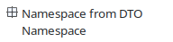
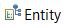
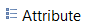


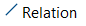

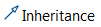

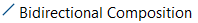
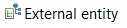
Copyright © 2008, 2026 Obeo - All rights reserved. This program and the accompanying materials are made available under the terms of the Eclipse Public License v2.0
Entity Designer permet de modéliser des entités métier.
Entity Designer fournit le point de vue Entity Views permettant de :
Pour créer un modèle Entity, ouvrir l’assistant depuis le menu :
File > New > Other... > Entity Model (catégorie IS Designer)
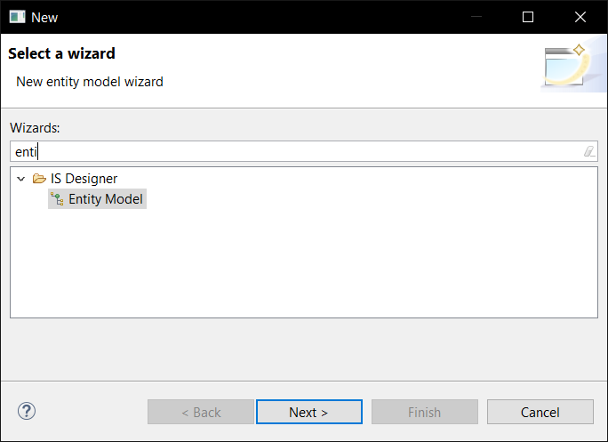
Cet assistant permet de définir :
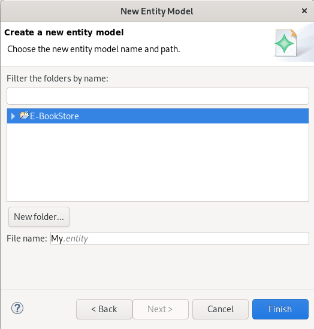
Une fois l’assistant validé, le modèle est créé, la représentation Entities Namespaces Hierarchy est créée et ouverte afin de commencer l'édition.
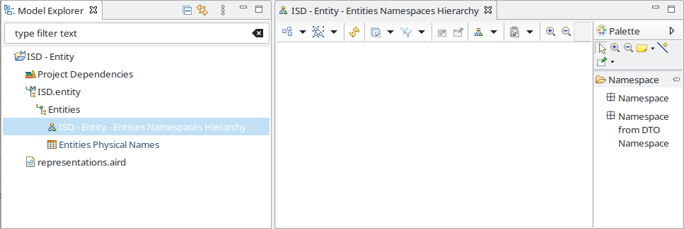
Lorsqu’un modèle Entity est créé à l’aide de cet assistant, les points de vue
Entity Views,
Entity (ISD consolidated view) et
Environment Views sont activés.
Le point de vue
Entity Views est décrit dans la section suivante. Le point de vue
Entity (ISD consolidated view) est décrit dans la section de documentation
ISD – Entity (ISD consolidated view). Le point de vue
Environment Views fournit les vues de propriétés.
L’outillage Entity Designer fournit un point de vue dédié à la gestion des entités métier. Ce point de vue permet de visualiser et modifier un modèle Entity via plusieurs types de diagrammes.
Pour ouvrir une session de travail sur un modèle Entity, utiliser l’une des méthodes suivantes :
*.aird existant,
*.entity sur la vue
Model Explorer,
Pour vérifier que le point de vue Entity Views est activé, ouvrir la boîte de dialogue Viewpoints Selection depuis le menu contextuel du Modeling Project :
Viewpoints Selection
Choisir le point de vue Entity Views.
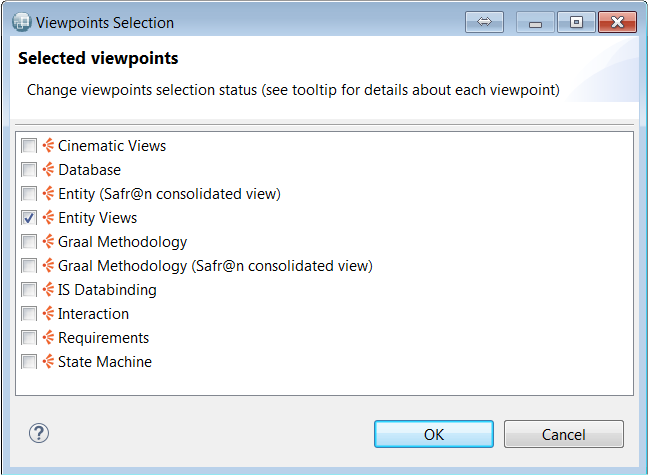
Une fois le point de vue activé, il devient possible de créer ou visualiser les diagrammes Entity Views.
Chaque type de diagramme est rattaché à un concept Entity précis. Par exemple, un Entities Diagram est rattaché à un Namespace.
Pour créer un diagramme d’un certain type, sélectionner l'élément du modèle auquel rattacher le diagramme dans la vue Model Explorer puis, avec un clic droit, sélectionner le menu :
New... > #Nom du diagramme#
Renseigner le nom du diagramme et valider.
Par exemple, sur un objet racine Entities, deux types de représentation peuvent être créés comme le montre la capture d'écran suivante :
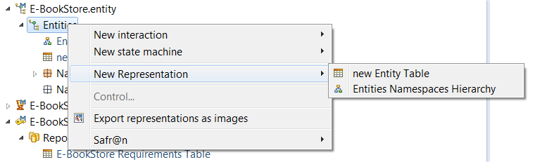
Pour ouvrir un diagramme, effectuer un double-clic sur le diagramme dans la vue Model Explorer. Attention, seuls les diagrammes correspondants aux points de vue sélectionnés sur la session sont affichés dans la vue Model Explorer.
Les diagrammes suivants peuvent être ouverts en mode «Vue Partielle». Le fonctionnement des Vues Partielles est décrit dans la section ISD – Outillage environnement / Vues Partielles
Les entités (
Entity) sont organisées en packages (
Namespace).
La gestion de la hiérarchie de packages se fait en utilisant le diagramme
Entities Namespaces Hierarchy.
Ce diagramme peut être créé sur l’objet racine
Entities.
Ce diagramme permet de créer, modifier ou supprimer des packages ainsi que d’accéder facilement au diagramme de gestion des entités d’un package.
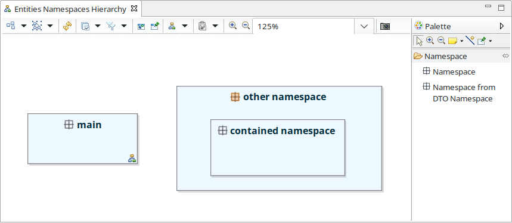
Les éléments suivants sont affichés sur le diagramme :
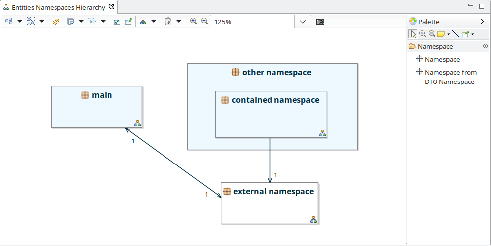
Les outils fournis par la palette sont :
| Création d’un package. Un package peut être créé sur le fond du diagramme ou à l’intérieur d’un autre package. | |
|
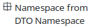 |
Création d’un package par duplication d’un package de DTO. Voir le diagramme Entities Diagram ci-dessous. |
Depuis un package, effectuer un double-clic ou utiliser le menu New ou Open pour ouvrir le diagramme Entities Diagram de ce package, en le créant si nécessaire.
Un diagramme des entités ( Entities Diagram) est associé à un package ( Namespace). Il permet de gérer les entités du package.
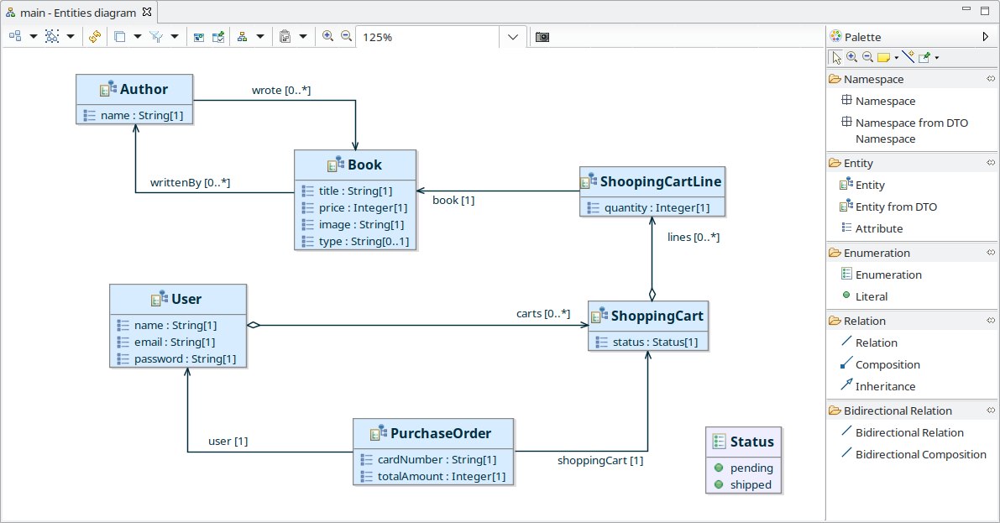
Les éléments suivants sont affichés sur le diagramme :
Les outils fournis par la palette sont :
|
|
Création d’un sous-package. |
|
 |
Création d’un package à partir d’un package de DTO. |
|
 |
Création d’une entité. |
| Création d’entités à partir de DTO. | |
|
 |
Création d’un attribut d’entité. |
|
|
Création d’une énumération. |
|
|
Création d’une valeur d'énumération. |
|
 |
Création d’une relation simple. |
|
|
Création d’une relation de composition. |
|
 |
Création d’un lien d’héritage. |
|
|
Création d’une relation simple bidirectionnelle. |
|
 |
Création d’une relation de contenance bidirectionnelle. |
|
 |
Ajout d’une entité externe. Cet outil permet de faire apparaître une entité définie dans un autre package pour créer des relations avec les entités du package courant. Cet outil est activable via le calque External Entities. |
L’outil de création d’entités à partir de DTO permet de reproduire un modèle d’entités à partir d’un modèle de DTO. Une boîte de dialogue permet de choisir les DTO et les relations à prendre en compte. Les DTO choisis peuvent être de différents packages mais la structure de ces packages n’est pas reproduite. Les entités créées sont toutes dans le package courant du diagramme.
Des entités et des relations sont créées pour chaque DTO sélectionné et chaque référence sélectionnée. Les attributs ne sont pas dupliqués, ils sont partagés avec les DTO grâce à la référence
Associated Types accessible dans la vue de propriétés de l’entité. La modélisation des DTO est décrite dans la documentation de
ISD – SOA Designer.
Les relations créées conservent un lien vers leur relation source dans le champ Associated References de la vue de propriétés. Ce lien est également renseigné lors de la conversion des packages comme décrit ci-dessous.
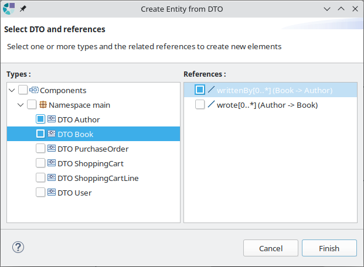
L’outil de création de package à partir d’un package de DTO permet de reproduire un modèle d’entités à partir d’un modèle de DTO en reproduisant la structure des packages. L’outil présente la hiérarchie des packages de DTO accessibles depuis le diagramme courant.
La sélection d’un élément dans l’arbre entraîne la sélection de ses sous-éléments, permettant de procéder à une sélection par soustraction plutôt que par addition.
La désélection d’un élément dont tous les sous-éléments sont sélectionnés entraîne la désélection de toute la hiérarchie. De manière synthétique :
Un élément est marqué partiellement sélectionné si certains de ses sous-éléments sont sélectionnés mais pas tous.
Lorsque tous les sous-éléments d’un élément sont sélectionnés, celui-ci devient sélectionné.
Les éléments marqués comme partiellement sélectionnés sont pris en compte par le traitement de duplication.
La sélection d’une relation induit la sélection du DTO ciblé par celle-ci. Il est possible de désélectionner ce DTO, mais toute relation dont les deux types source et cible ne sont pas sélectionnés ne sera pas dupliquée.
Le bouton Finish est activé si au moins un package est sélectionné ou partiellement sélectionné.
Le traitement crée les packages de plus haut niveau sélectionnés dans le package du diagramme courant.
Les éléments pris en compte pour la duplication sont ceux dont :
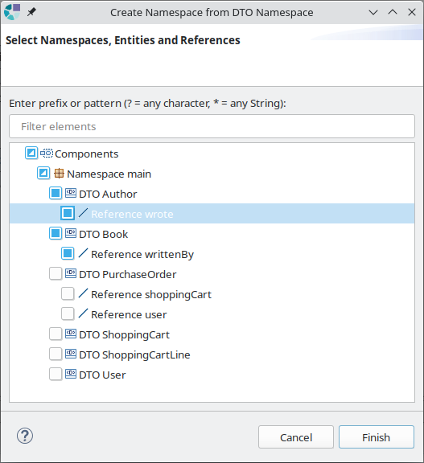
Les attributs d’entité sont pourvus de champs
minimum,
maximum et optionnellement
pattern.
La nature de ces champs dépend de la nature du type, qui peut être
textuel (essentiellement
String),
numérique (
Integer,
Long,
Float, etc.) ou
autre (
Boolean,
Binary, etc.).
Pour un type de nature textuelle :
Pour un type de nature numérique :
Pour un type de nature autre ces champs sont non applicables.
Ces champs sont exploités par la génération et l’import OpenAPI (Swagger).
La table des entités ( Entity Table) peut être créée sur l’objet racine Entities.
La table des entités permet de lister les entités existantes et d’afficher les informations suivantes :
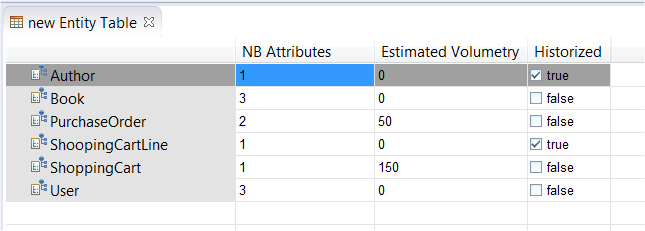
La gestion des exigences pour un modèle Entity utilise le mécanisme transverse de gestion des exigences fourni par l’outillage.
Se référer à la documentation
ISD – Requirements tooling dans l’aide d’Eclipse.
Il est possible d’attacher de la documentation aux éléments d’un modèle Entity. Le mécanisme utilisé est le mécanisme transverse de gestion de la documentation fourni par l’outillage.
Se référer à la documentation
ISD – Documentation Tooling dans l’aide d’Eclipse.
Il est possible de créer des diagrammes d’interaction pour les éléments d’un modèle Entity.
Se référer à la documentation
ISD – Interaction tooling dans l’aide d’Eclipse.
Il est possible de créer des diagrammes de machines à états pour les éléments d’un modèle Entity.
Se référer à la documentation
ISD – State Machine tooling dans l’aide d’Eclipse.